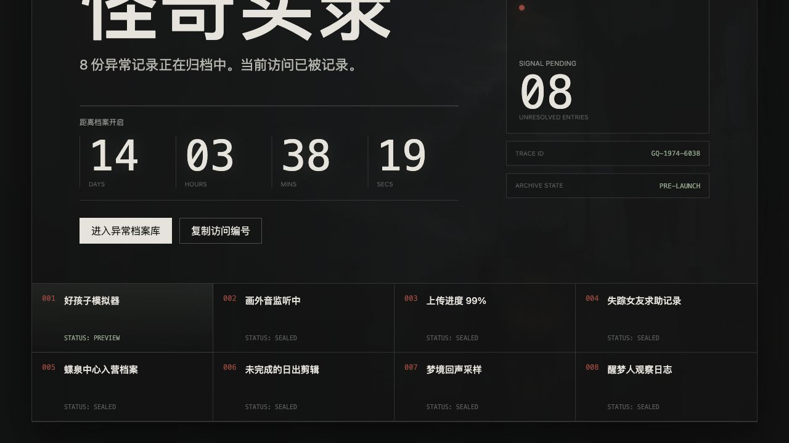

第一屏只建立气质
大标题、倒计时、访问编号和系统状态，先让用户进入“异常档案库”的观看心理。
WEBSITE CONCEPT / PRE-LAUNCH PORTAL
不做传统剧集官网，而做一个“被意外打开的异常系统”。用户进入后看到倒计时、访问编号和 8 个异常入口， 像是在读取一组尚未完全归档的怪奇记录。

大标题、倒计时、访问编号和系统状态，先让用户进入“异常档案库”的观看心理。
入口先露出编号和代号，内容后续逐个解锁，天然适合持续预热。
不堆剧情简介，用“读取、封存、同步、观察”等系统语言制造神秘感。
每次解锁一个入口，都能变成短视频、海报、微博投票和小红书截图素材。
001 好孩子模拟器
002 画外音监听中
003 上传进度 99%
004 失踪女友求助记录
005 蝶泉中心入营档案
006 未完成的日出剪辑
007 梦境回声采样
008 醒梦人观察日志